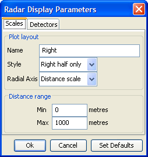
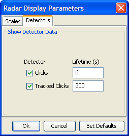

Name: each display may be named individually as an aid to the user
Radar display options are set when the display is first created, and they can be adjusted at any time using the popup menu accessed by right clicking on the radar plot.
The Radar Display Parameters Dialog has two tabs

Name: each display may be named individually as an aid to the user
Style: select the type of radar display - Full, Right half, Left half, Front half or Rear half.
Radial Axis: select either amplitude or distance.
If planar or a volumetric array is being used and slant angle is available,
then there will be an additional option to display slant angle on the radial axis.
The lower panel will automatically change between Amplitude Range and Distance Range depending on the Radial Axis selection.
When using Amplitude Range, it is common to enter the maximum amplitude as
the minimum value so that louder sounds appear closer to the centre of the display.
It is however possible to enter these numbers the other way around so that louder
sounds are closer to the perimeter of the display.

The detector tab lists data blocks in the PAMGUARD system that can be overlaid
on the radar plot. The contents of this list will depend on which detectors are
included in the current PAMGUARD system.
To display data from a particular detector, tick the check box. Also enter the time in seconds that you wish each detection to be displayed for. Generally detections which occur at a high rate, such as clicks, should only be displayed for a short amount of time. Detections that are less common (such as manually tracked clicks) may displayed for longer without cluttering the display.
Previous: Creating a radar display